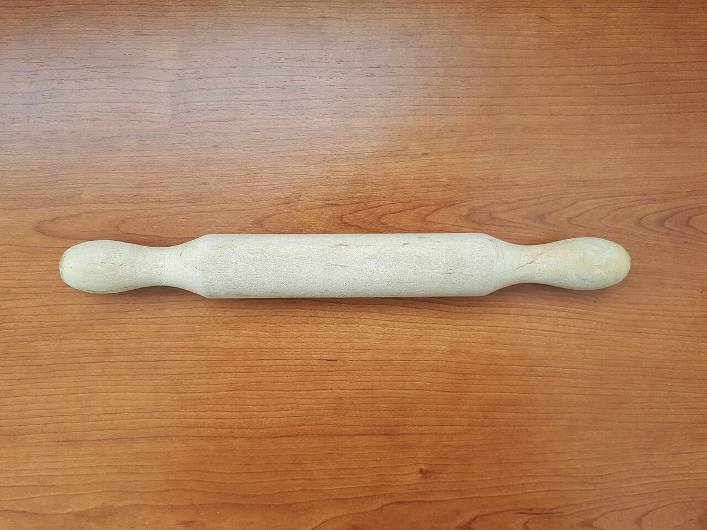
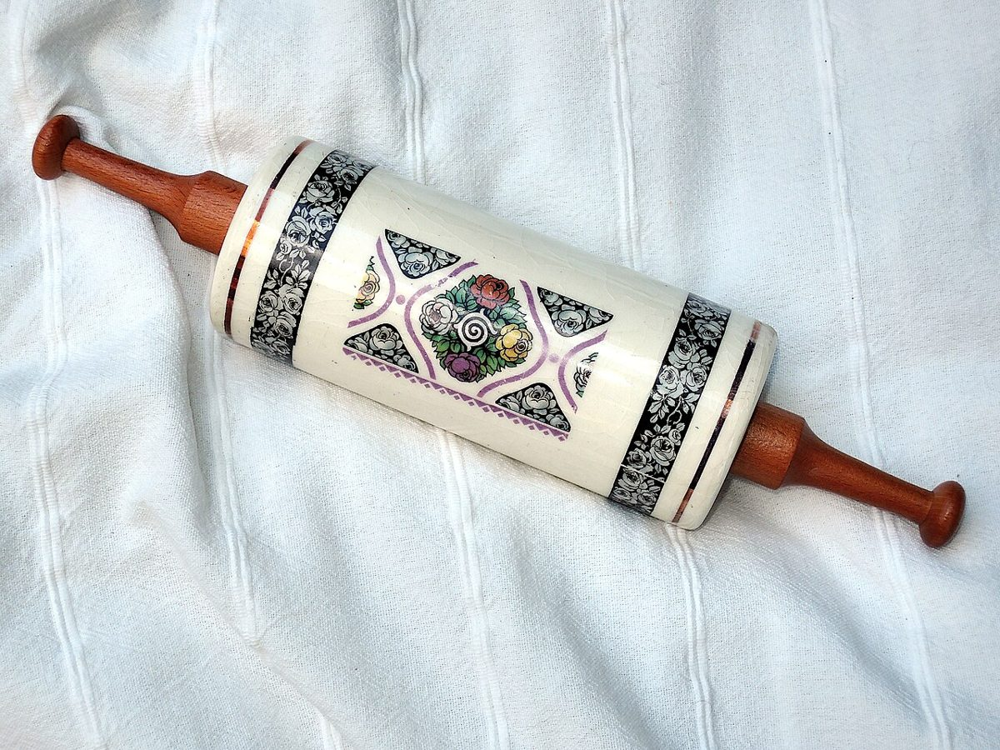

お店のこと
お店のこと
お店について確認できているのは、所在地・電話番号・Instagramのアカウントです。ほかは準備中です。
七行の確認表
曜日の文字は、七つの項目に付けた飾りの番号です。営業日とは関係ありません。
- 日所在地〒024-0104 岩手県北上市二子町宿西49-2確認済み
- 月電話0197-62-5816確認済み
- 火Instagram@suiyouya確認済み
- 水営業時間準備中
- 木定休日準備中
- 金メニュー・価格準備中
- 土ご予約・駐車場準備中
イメージ写真
焼き菓子づくりを思わせる道具たち
お店の道具ではなく、国外または撮影地不明のフリー素材です。



制作側の連想
もし七本縞をほどくなら
このページは、七つの項目を七行に並べた作りです。お店の考え方を表すものではなく、制作側の連想で、お店の理念・由来とは無関係です。屋号の読みや由来についても、制作側は何も確認していません。